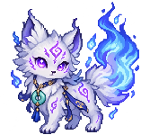
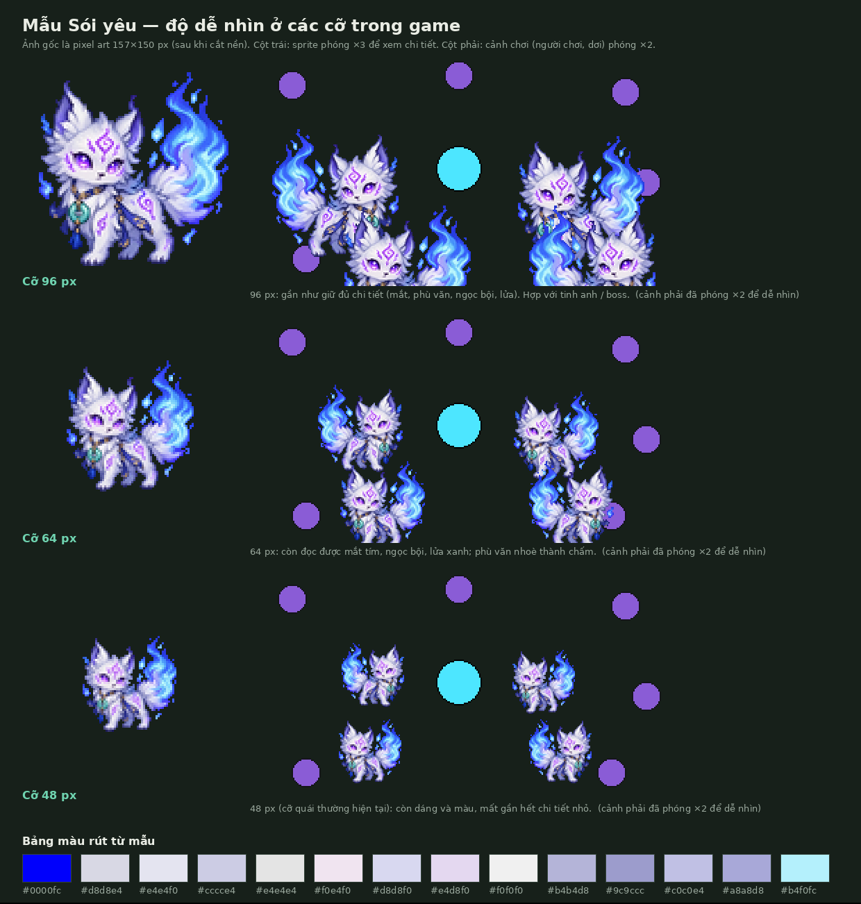
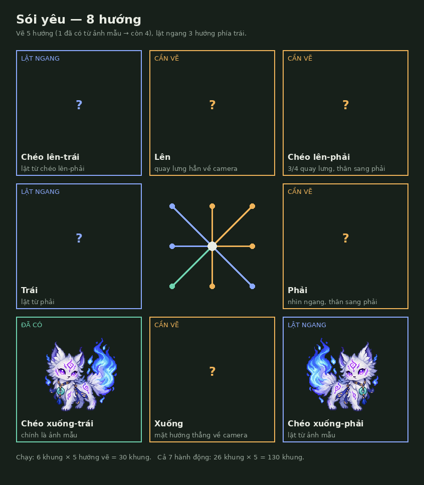

Mọi hướng, mọi hành động của Sói yêu phải khớp mẫu này. Trang gồm đặc điểm nhận dạng, cỡ dùng trong game, 8 hướng, số khung và bộ prompt để tạo phần còn thiếu.

| Loại | Cỡ sprite | Ghi chú |
|---|---|---|
| Sói yêu thường | 64 px | Còn đọc được mắt, ngọc bội, lửa. Bán kính va chạm cần tăng từ 14 lên khoảng 20. |
| Sói tinh anh | 96 px | Đủ chi tiết phù văn; đổi màu lửa (vd. tím đỏ) để phân biệt. |
| 48 px | Không khuyến nghị | Chỉ còn dáng và màu. |

Ba hướng phía trái là bản lật ngang của ba hướng phía phải. Ảnh mẫu chính là hướng chéo xuống-trái (3/4, mặt về camera, thân sang trái); lật nó ra chéo xuống-phải. Lật ngang làm ngọc bội và khăn đổi sang vai bên kia; đa số game chấp nhận. Muốn giữ đúng bên thì phải vẽ đủ 8 hướng, gần gấp đôi số khung.

| Hướng | Cách có |
|---|---|
| Lên | Vẽ |
| Chéo lên-phải | Vẽ |
| Phải | Vẽ |
| Chéo xuống-phải | Lật từ ảnh mẫu |
| Xuống | Vẽ |
| Chéo xuống-trái | Ảnh mẫu |
| Trái | Lật từ phải |
| Chéo lên-trái | Lật từ chéo lên-phải |
| Hành động | Khung / hướng | 5 hướng vẽ | Ghi chú |
|---|---|---|---|
| Chạy | 6 | 30 | Lặp |
| Cắn | 4 | 20 | Lặp khi áp sát người chơi |
| Gồng (báo trước cú lao) | 3 | 15 | Chạy theo tiến độ gồng, không theo fps |
| Lao | 3 | 15 | Lặp |
| Nghỉ sau lao | 4 | 20 | Chạy theo tiến độ nghỉ |
| Trúng đòn | 1 | 5 | |
| Chết | 5 | 25 | |
| Tổng | 26 | 130 |
Trong game: chọn hướng theo góc vận tốc chia 8 cung 45°; lúc gồng và lao dùng hướng đã khoá.
Prompt viết bằng tiếng Anh vì đa số công cụ tạo ảnh hiểu tiếng Anh tốt nhất. Mỗi lần tạo đều đính kèm wolf_concept.webp làm ảnh tham chiếu nhân vật.
wolf_concept.webp và ảnh tĩnh đã duyệt của đúng hướng đó.Mỗi prompt = phần chung + dòng riêng dưới đây. Hướng chéo xuống-trái đã có (ảnh mẫu); ba hướng phía trái lật ngang.
Mỗi prompt = phần chung + dòng hướng (bỏ "standing pose") + dòng sprite sheet với số khung N + dòng hành động. Bộ ghép ở trên làm sẵn việc này.
Dùng lại toàn bộ ảnh của sói thường. Chỉ cần một ảnh mẫu để chốt màu; game tự đổi màu theo bảng này.
Nếu muốn giữ mẫu dễ thương cho linh thú đồng hành và làm quái trông dữ hơn.
Chạy tools/art/reference_scale.py cho từng ảnh mới để khôi phục lưới pixel, xoá nền và thu về cỡ dùng trong game. Bước tiếp theo, chưa làm: khoá các khung về bảng màu của mẫu, xếp vào sprite sheet (mỗi hàng một hành động, mỗi hướng một sheet) và nối vào renderer của game.